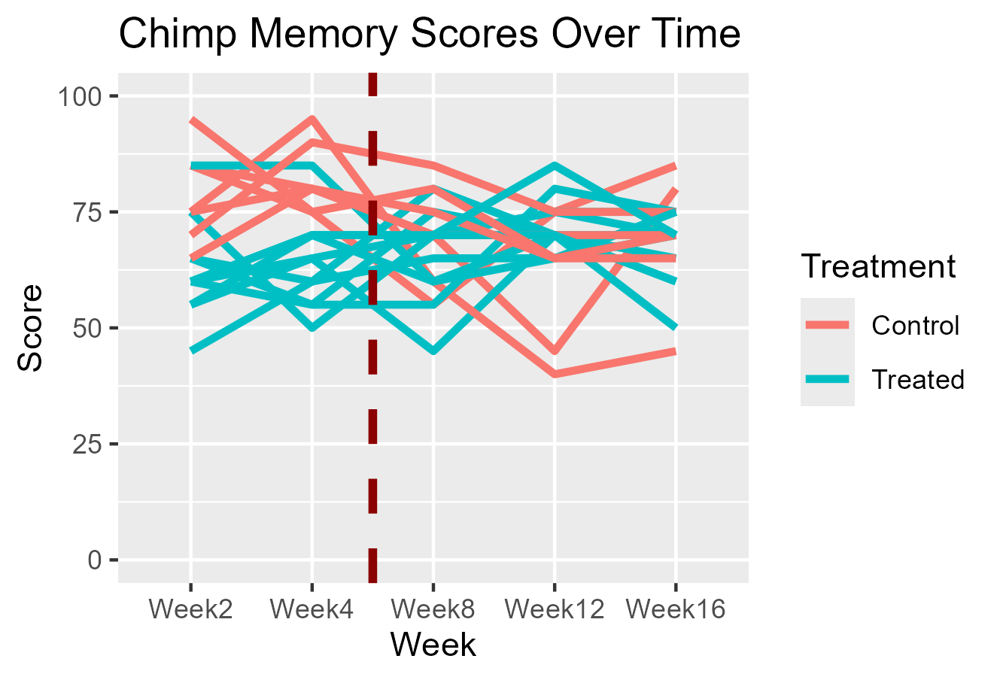

model <- glm(cbind(total_correct, trials - total_correct) ~ is_ST * Treatment,
data = chimp_data_reshape,
family = binomial())Effects of Surgery on Chimp Memory
Executive Summary
- Goal: Estimate the effect of a particular surgery on chimp memory.
- Methods: A binomial logistic regression model was fit with terms for time and if the chimp had the surgery or not, along with an interaction between the two.
- Results: There was a significant difference in scores between chimps that had surgery and those that did in the 2-4 weeks after the surgery date, but the difference in scores between groups diminishes over the long run.
Introduction
The goal of the study is to determine if a particular surgery affects the memory of chimps who are taking a test. For each chimp, they are shown two objects and need to choose the object with the raisin underneath. Each chimp goes through this 20 times, and the percentage of correct choices is recorded. Each chimp is tested at the time interval two weeks after surgery date, four weeks, eight weeks, 12 weeks and 16 weeks.
For this analysis, we want to have a methodology that estimates if the surgery has an effect on chimp memory, and what is the magnitude (measured by difference in scores between the control and treated group) of the effect of surgery if there is one. Since this study is being conducted over time, we also want to know how time affects the significance and magnitude of surgery.
Description of Dataset
The dataset consists of 18 chimps, each with their own name and ID. Seven of them were in the control group while the remaining 11 were in the “treated” group. As discussed in the introduction, each chimp is evaluated at the time period of 2, 4, 8, 12, and 16 weeks post surgery date, with the percentage of correct choices recorded. In the plot below, you can see how each chimp scored over time.

The red line here indicates the split between short-term (2 and 4 weeks) and long term (8, 12, and 16 weeks). This will be discussed more in the Methodology section.
There were no missing values in the dataset, so this was a straightforward dataset to analyze from a missing data perspective.
Methodology
Many different model types were discussed, but the model ultimately selected was a binomial logistic regression, where the outcome variable was the number of correct choices out of 20.
In this model, there are two variables: Is_Short_Term, which is 1 if Week is either 2 or 4, 0 otherwise, and Treatment, which is a factor with values “treated” and control.” An interaction term is used to estimate if the effect of treatment changes based on what time period the chimp is in.
Leaving treatment as a factor was straightforward, but the time component was tested in a few different ways. Treating week as a factor, treating week as numeric, and using a spline for time were all considered, but comparing models by BIC, the binomial logistic regression with a binary short term / long term variable and a variable for the chimp’s treatment had the lowest BIC, and was easiest to interpret while directly answering the client’s question.
In mathematical terms, the model can be written as:
\[ \begin{aligned} \text{TotalCorrect}_i &\sim \text{Binomial}(n = 20,\, p_i) \\ \text{logit}(p_i) &= \beta_0 + \beta_1 \, \text{Is\_ST}_i + \beta_2 \, \text{Treatment}_i + \beta_3 \, (\text{Is\_ST}_i \times \text{Treatment}_i) \end{aligned} \]
In R:
An extension of the model that was tested was adding a random effect for chimp name. It seemed natural to me that treatment effect would vary by chimp, or that there was innate differences in memory for each chimp. This was tested in with a few different formulations of random effects structures by the code below:
mixed_model1 <- glmer(cbind(total_correct, trials - total_correct) ~
is_ST * Treatment + (1|Monkey),
data = chimp_data_reshape,
family = binomial())
# extract ranef's: all 0 bc singular
ranef(mixed_model1)
# confidence intervals for parameters
confint(mixed_model1, method = "boot")The mixed effects model gives a singular fit, indicating that the random effect variance estimated is 0, and that the random effect for chimp is not needed. This is further confirmed by estimating parametric bootstrap confidence intervals for each parameter, and the confidence interval for the random effect variance includes 0. The parametric bootstrap is used here because the distribution of the random effect variance is skewed and fixed effect estimates depend on random effect estimates, which violates how a typical confidence interval is derived for typical linear/logistic model, hence why a bootstrap approach is used. (Extending the Linear Model, Faraway, pages 180-185)
Overall, the final model is simple, but allows us to answer if the surgery has an effect on chimp memory, and to what degree.
Results
Below is the table of coefficients for the binomial logistic regression.
Coefficients:
| Coefficient | Value | p value |
|---|---|---|
| Intercept | 0.73632 | 1.65e-12 |
| Is_Short_Term | 0.67245 | 0.000239 |
| Treatment | 0.03281 | 0.806127 |
| Is_Short_Term:Treatment | -0.90156 | 5.80e-05 |
From the table, we can see that the interaction between Is_Short_Term and Treatment has a significant p-value at the \(\alpha = 0.05\) level. Treatment being insignificant on its own means that during the long-term time frame (Is_Short_Term = 0), there is not a detectable difference between Treatment and Scores. Treatment is important due to the significant interaction between Time Frame and Treatment, but the effect of Treatment is different depending on time.
While the coefficient outputs are important to see and provide important information, the interaction between time frame and treatment type is easier to understand when looking at the predicted outcomes for each interaction type, which are summarized in the tables below.
Predicted Probabilities:
| Is_ST | Control | Treated | Difference |
|---|---|---|---|
| Yes | 80% | 63% | 17% |
| No | 68% | 68% | 0% |
Predicted Log Odds:
| Is_ST | Control | Treated |
|---|---|---|
| Yes | 1.409 | 0.540 |
| No | 0.736 | 0.769 |
From the table, you can see that for chimps in the control group, during the short time frame they are expected to choose the right object around 80% percent of the time. This figure decreases to 68% during the long time frame, indicating that as time increases, their accuracy becomes worse. In comparison, chimps who were treated also average around 68% accuracy in classifying objects over the long term, but during the short term, they are expected to choose the correct object around 63% of the time, which is 17% lower than for the control group. This is a large difference and shows that the difference between chimps who had surgery and those who didn’t is substantial over the course of the first 2-4 weeks post surgery.
Conclusion
In summary, we have built a model to predict how many times a chimp will chose the correct object with terms for if the chimp had surgery or not, and how long after the surgery the event took place. The model shows a statistically significant interaction between time frame after the surgery, and whether or not the chimp had the surgery or not. Over the long term (6+ weeks), the effect of surgery is minimal, but for the first 2-4 weeks, there is a large difference between scores of chimps who had surgery versus those who do not. With this model formulation, we were able to estimate if there was a statistically significant effect (there is), and also what the magnitude of the effect was (~17% difference between treated and control in the short term, minimal in long term). We also tested to see if there was any chimp-specific variation by using the mixed effects model, which there was not.
GitHub repo with full code: https://github.com/dgerth5/S690-Final-Project/tree/main